B2-H-0043 cohort-aware matcher engineering plan
Status: H43-X1.5 complete with investigate; H43-X1.6 available
Plan owner: rustmatch maintainers
Created: 2026-08-06
Current source baseline: 3d48cb754d89da1359582627f743af87a86b342a
Decision policy: optimization-decision-policy.md
Historical evidence: optimization-attempt-ledger.md
Parent portfolio: post-h11-future-optimization-portfolio.md
Executive decision
Rustmatch should explore a cohort-aware exact matcher, not a single global
replacement algorithm. The builder will conservatively classify immutable
properties of each registered pattern, group eligible patterns into semantic
cohorts, and run each cohort through an independently certified exact backend.
The observable result remains the union of the same longest consuming event
for every (pattern identity, input start) pair.
This path is justified by unusually strong but uneven historical signals:
- H24 accelerated assertion-heavy targets by roughly 200x to 406x and improved preparation by 15.39% to 45.30%, but missed admission on one adversarial peak-RSS stratum.
- H11 recovered the H9 shared-candidate opportunity and retained gains up to 695.703% without guard failure.
- H42 recovered the SIMD opportunity with target gains of 30.305% to 175.971% and mixed/neighbor gains of 43.986% to 235.754%, but only after repeated work to separate the fast path from inactive-path code-layout regressions.
- H39, H40, and the H12 through H38 recovery series show that a correct runtime selector is insufficient by itself. Artifact layout, preparation cost, scratch memory, and inactive-path code generation are part of the design.
The program therefore begins with classification and semantically inert cohort plumbing. It does not begin by restoring a rejected fast path. Every later backend must prove exactness and value independently, then pass the unchanged G9 admission process as part of the complete selected system.
Goals
- Preserve the current public match-event semantics for every supported pattern mixture, input, worker count, and failure mode.
- Make immutable pattern-set features explicit and testable without using benchmark identity, timing observations, or corpus-specific labels.
- Allow a specialized backend to serve only the cohort for which its proof and performance evidence apply.
- Recover large special-case gains without imposing regressions on patterns that remain on the current H42 path.
- Keep the public API conservative until automatic selection has survived a formal campaign.
- Leave a durable result and evidence record for every completed, rejected, blocked, or superseded task.
Non-goals
- No heuristic may change which events are emitted.
- No task may relax or retune an existing historical guardrail.
- No selector may inspect benchmark names, expected output, corpus identity, prior timing, or machine-local evidence paths.
- The first increment will not expose a public backend-selection enum.
- A specialized path will not be merged merely because one target is very fast. It must satisfy the current decision policy for its complete admitted configuration.
- Cohorting does not authorize approximate matching, partial callback delivery, hidden retries, or silent fallback after an externally visible failure.
Semantic invariants
The following properties are non-negotiable across every task:
| Invariant | Required behavior |
|---|---|
| Event identity | Preserve caller PatternId, start, and greatest consuming end exactly. |
| Event multiplicity | Equal pattern text under distinct IDs remains distinct; no cohort may deduplicate registrations. |
| Event order | Callback order remains unspecified, but the complete event multiset must be identical. |
| Failure atomicity | Workers and cohorts buffer results; no callback occurs until all applicable scans succeed. |
| Exact authority | The current exact NFA/cache machinery remains the semantic authority and conservative fallback. |
| UTF-16 | Classification and scanning use the canonical UTF-16 code-unit model, including isolated surrogates. |
| Assertions | Anchor and boundary decisions retain full-input context and absolute positions. |
| Reuse | A compiled matcher remains immutable and reusable after successful scans and documented failures. |
| Selection stability | A built matcher's static cohort assignment cannot change between scans. |
| Honest evidence | Every receipt identifies source, inputs, host state, selector version, cohort counts, and activated backend. |
Task dependency graph
Color carries the same status vocabulary as the repository roadmap. Solid arrows are execution dependencies. Dotted arrows are evidence or policy inputs that do not themselves authorize execution.

Proposed runtime architecture
The classifier produces proof-bearing facts, not a backend recommendation. The frozen selector maps those facts and documented scan facts to eligible backends. Any unproved or unsupported case takes the current exact generic path.

Initial static facts
The first classifier should derive only facts already justified by HIR or compiled-table analysis:
- assertion use and assertion kinds;
- nullable or pure-zero-width status;
- minimum and finite maximum consuming width;
- exact literal status;
- necessary literal/prefix and its proof source;
- ASCII-only status where provable;
- prefix length and distinct prefix count;
- estimated NFA state and terminal counts;
- whether the current literal filter, start table, shared candidate union, and five-unit SIMD predicate are structurally eligible.
Unknown must be represented explicitly. An unknown fact never becomes an
optimistic true and never selects a specialized backend.
Allowed dynamic scan facts
The first automatic selector may use input length, requested worker count, available CPU features, deterministic cohort size, and a bounded candidate density sample already defined by the runtime. It may not use elapsed time, benchmark/corpus names, expected results, file paths, environment-specific allowlists, or feedback from prior scans.
Evidence and admission funnel

Cross-graph dependencies
| This plan | External node or document | Dependency |
|---|---|---|
| H43-P0 through H43-D1 | Roadmap B2 | B2 supplies the reviewed historical hypotheses and prevents unaudited optimization work. |
| H43-G1 and H43-R1 | Roadmap G9 plus the current decision policy | The selector and activated backend are judged as one candidate under unchanged guards. |
| H43-E1 | ADR-0001 and ADR-0002 | UTF-16 coordinates and complete longest-event semantics define parity. |
| H43-E1 and H43-API | ADR-0003 and ADR-0008 | Public API minimalism, worker behavior, buffering, and failure handling constrain the design. |
| H43-A1 | H24/H25 and H12-H38 evidence in the optimization ledger | Reuse the demonstrated mechanism and known failure surfaces; do not rediscover them by blind tuning. |
| H43-SIMD | H40 and merged H42 evidence | Existing SIMD code remains intact; a cohort may clarify eligibility but must not duplicate the backend. |
| H43-INPUT | B2-H-0006 design | Start ownership is the exact semantic construction; performance headroom must still be demonstrated. |
| Any admitted change | Roadmap H1/H2/H3 and I10 | Property, fuzz, Miri, API, dependency, security, MSRV, and soak evidence must remain green. |
| Release-facing result | Roadmap R1/R2/R3 and I11 | Packaged artifact, current comparisons, compatibility, and release review must use the merged revision. |
Result-update contract
Every task below contains an Implementation result block. When work starts,
change its status to active and update the Mermaid class. When it stops:
- record the exact source and baseline commits;
- record commands, fixture and plan hashes, and retained artifact links;
- summarize semantic, performance, memory, and inactive-path outcomes;
- state
complete,rejected,blocked, orsupersededwith the decisive reason; - update downstream availability and the dependency graph colors;
- regenerate the HTML universe with
cargo xtask optimization-ledger; - reload the already-open system-browser tab using the refresh command in the final section.
Historical evidence is immutable. A later recovery links to the earlier result instead of rewriting it.
H43-P0: Freeze plan, baseline, invariants, and result schema
Scope: program
Level: cloud
Status: complete
Primary actor: optimization program maintainer
Supporting actors: semantic reviewer, performance reviewer
Goal
Create an executable, dependency-ordered program that can recover special-case performance without weakening exactness or admission rules.
Preconditions
- B1 and B2 are complete.
- H42 and the release-preparation merge are present on public
main. - Historical accepted and rejected evidence remains available.
Minimal guarantee
No production source, benchmark threshold, or retained evidence is changed.
Success guarantee / postconditions
- Stable task IDs, dependencies, invariants, evidence expectations, and result fields exist in this document.
- Exactly one implementation task, H43-C1, is available at plan creation.
- Specialized backends remain gated behind semantic and diagnostic tasks.
Main success scenario
- Freeze the current mainline source identity.
- Summarize the historical opportunity and failure modes.
- Define semantic and selector invariants.
- Build the dependency DAG and cross-roadmap links.
- Define task-level evidence and result-update contracts.
- Render the Markdown and Mermaid diagrams into the HTML universe.
Expected evidence
- This Markdown source and its hash-bound HTML/Mermaid render.
- Clean
cargo xtask verify-optimization-ledgerafter rendering. - Browser inspection of the generated document.
Dependencies: roadmap B2 and G9; optimization ledger; ADR-0001 through ADR-0003 and ADR-0008.
Implementation result
- Result: complete on 2026-08-06.
- Implementation commit:
4ff72637fa3e47078ac1fefc5737aed63416adee. - Source baseline:
79cc8e9b4438cb4cabd482789715a16ff9a834d8. - Outcome: the cohort-aware program is decomposed into independently falsifiable semantic, diagnostic, specialization, selector, and admission tasks. No production code or performance threshold changed.
- Evidence: this document, generated HTML mirror, Mermaid SVG assets, and repository verification recorded with the implementing change.
H43-C1: Implement conservative internal pattern classifier
Scope: rustmatch compiler internals
Level: sea
Status: complete
Primary actor: matcher compiler
Supporting actors: optimization engineer, semantic reviewer
Goal
Produce stable proof-bearing PatternFacts and aggregate PatternSetAnalysis
without changing partitioning, execution, public API, or emitted events.
Preconditions
- H43-P0 is complete.
- The exact H42 compile and scan behavior is the baseline.
- Every proposed fact has a conservative derivation from HIR or compiled data.
Minimal guarantee
If derivation is uncertain, record Unknown or ineligible. Existing matcher
construction and scans remain byte-for-byte behaviorally equivalent.
Success guarantee / postconditions
- Internal immutable facts exist for every accepted registration.
- Duplicate text with distinct IDs retains separate fact records.
- Facts are deterministic across build order replays and worker counts.
- No classifier field directly names or selects a backend.
Main success scenario
- Define small internal enums/structs with explicit unknown states.
- Derive assertion, width, literal, prefix, ASCII, and size facts during the existing HIR/compile flow.
- Aggregate counts and eligibility facts without changing registration order.
- Expose facts only through test or benchmark internals.
- Add table-driven unit tests for every derivation and uncertainty boundary.
- Run formatting, clippy, unit, property, and differential tests.
Extensions
- A fact requires expensive analysis: omit it in this task.
- Two derivations disagree: fail an internal invariant test; do not choose the more permissive result.
- Adding dormant metadata changes an inactive guard: capture the discrepancy and stop before H43-K1.
Expected evidence
- Classifier truth tables and property tests.
- Deterministic analysis snapshots for representative mixed pattern sets.
- Full
cargo xtask cioutput. - A no-behavior-change differential receipt and focused inactive-path timing smoke sufficient to detect gross layout effects.
Dependencies: H43-P0; UC-1, UC-8, UC-9, and UC-11 evidence contracts.
Implementation result
- Result: complete on 2026-08-06.
- Implementation: added an on-demand, feature-gated
MatcherBuilderdiagnostic that derives immutablePatternDiagnosticsand stable assertion-free/assertion-bearing ID lists from normalized HIR. Facts cover assertion kinds, nullability, minimum/maximum consumed width, ASCII-only reachability, a bounded exact-literal proof, a conservative necessary prefix, filterability, registration ordinal, and HIR-node count. - Isolation result: diagnostics are computed only when repository tooling explicitly asks. They are not retained by the builder or matcher and are not consulted by compilation, registration-order partitioning, scan dispatch, callbacks, or the public release API. Default-feature builds compile the complete cohort module out.
- Semantic evidence: four focused tests pass, including stable sorting, duplicate text with distinct IDs, all assertion-kind facts, finite/unbounded width boundaries, the 32-unit exact-prefix cap, worker-count invariance, and identical events after diagnostic inspection.
- Repository evidence:
cargo xtask cipasses the full workspace, clippy, fuzz-target linting, 55 library tests, 33 public-spine tests, Java oracle and differential fixtures, rustdoc, MSRV, HTML/ledger freshness, and benchmark smoke.cargo test -p rustmatch --no-default-featuresseparately passes 50 library tests, properties, the public spine, and doctests with classification absent. The Mermaid inventory test now asserts this plan's three diagrams. - Decision: C1 passes. Authorize H43-C2 diagnostics/schema work. Do not yet authorize H43-K1 cohort compilation or any specialized backend.
H43-C2: Add analysis diagnostics and classifier proof tests
Scope: internal observability
Level: sea
Status: complete
Primary actor: optimization engineer
Supporting actors: benchmark harness, maintainer
Goal
Make classification inspectable and falsifiable before it controls execution.
Preconditions
- H43-C1 passes functional and inactive-path checks.
- Fact vocabulary is stable enough to serialize in a versioned diagnostic.
Minimal guarantee
Diagnostics reveal no hidden selector and do not alter public API stability.
Success guarantee / postconditions
- A versioned benchmark/test-only report records facts, cohort candidates, and proof provenance.
- Near-boundary, unknown, and adversarial patterns are represented explicitly.
- Reports are deterministic and safe to retain in evidence bundles.
Main success scenario
- Define a versioned diagnostic schema.
- Emit per-pattern and aggregate facts under
benchmark-internalsor tests. - Add golden snapshots for literal, assertion, mixed, Unicode, nullable, and unfilterable sets.
- Add mutations that cross one classification boundary at a time.
- Verify schema stability and deterministic serialization.
Expected evidence
- Versioned schema and golden reports.
- Boundary-mutation test matrix.
- Documentation mapping each fact to its conservative proof.
Dependencies: H43-C1; benchmark evidence schema conventions from B1/B2.
Implementation result
-
Result: complete at implementation commit
e00de88b81f23d5286d7109a3a5628ab91e925d6, with the impossible-HIR golden extension retained at9934b7efb72fd5a8393e1e8433ca3561296695d0. -
Report surface: the unpublished benchmark adapter now accepts
cohort-report PATTERNS.tsv. It reads UTF-8 patterns, validates IDs and syntax throughMatcherBuilder::add, calls the on-demand C1 diagnostic, and emits schema version 1. It deliberately does not callbuildorscan. -
Retention boundary: reports contain stable pattern IDs, registration ordinals, and FNV-1a source/expression digests rather than raw regular expressions. Cohort summaries and pattern facts remain in registration order.
serde(deny_unknown_fields)rejects accidental unversioned fields. -
Golden evidence:
rustmatch-bench/fixtures/cohort/h43-c2-patterns.tsvandh43-c2-expected.jsonbind 18 registrations across literals, duplicate text under distinct IDs, all four assertion kinds, predicates, Unicode, nullability, bounded and unbounded repetition, alternation, case folding, the 32-unit proof cap, and an impossible normalized HIR. -
Boundary evidence: one focused mutation matrix proves the following neighboring transitions without enabling execution:
Boundary Frozen examples Expected diagnostic change Assertion-free to assertion-bearing abc/^abcCohort and line-startonly; required prefix remains three units.Exact literal to wildcard suffix abc/ab.Exact proof disappears, required prefix falls to two, and dot makes the consumed domain non-ASCII. Exact-proof cap 32 / 33 xunitsExact proof changes from 32 to absent while the conservative prefix remains capped at 32. Finite to unbounded width (?:ab){2,4}/(?:ab)+Maximum status changes from finite eight units to unbounded. Prefix filter floor ab/abcFilterability changes only at the existing three-unit floor. ASCII to Unicode literal abc/éASCII-domain fact changes; Unicode remains an exact one-unit UTF-16 literal. Possible to impossible HIR abc/()Minimum becomes absent and maximum status becomes explicit impossible. -
Proof provenance: schema v1 records the proof algorithm for each fact:
Fact Conservative proof recorded in the receipt Cohort and assertion kinds Exhaustive walk of normalized HIR assertion nodes. Nullability Normalized HIR nullability metadata. Consumed width Conservative recursive HIR width algebra with finite, unbounded, and impossible states kept distinct. ASCII-only domain Exhaustive consumed-symbol and predicate-domain walk. Necessary prefix Conservative required-prefix derivation capped at 32 UTF-16 units. Complexity Saturating normalized-HIR node count. -
Focused verification: all 33 benchmark-adapter tests pass, including golden equality, byte-stable repeated serialization, strict unknown-field rejection, exact command arity, and the boundary matrix. The release command exactly reproduces the checked-in golden JSON.
-
Repository verification:
cargo xtask cipasses formatting, clippy, fuzz-target linting, 55 library tests, 33 public-spine tests, compatibility and Java differential evidence, rustdoc, MSRV, generated evidence freshness, and benchmark smoke.cargo test -p rustmatch --no-default-featuresseparately passes 50 library tests, properties, 33 public-spine tests, and doctests with all cohort/report internals absent. -
Decision: C2 passes. Classification is now inspectable, hash-bound, and falsifiable before it can control execution. H43-K1 is dependency-ready, but no cohort matcher has been compiled and no performance claim is made here.
H43-K1: Compile assertion-free and assertion-bearing cohorts
Scope: matcher construction and scan orchestration
Level: sea
Status: complete
Primary actor: matcher builder and scanner
Supporting actors: application sink, semantic reviewer
Goal
Prove that one registration set can be split into stable cohorts and recombined exactly while every cohort still uses the current generic backend.
Preconditions
- H43-C1 supplies deterministic assertion facts.
- Current global PatternId and failure semantics are documented by ADR-0002, ADR-0003, and ADR-0008.
Minimal guarantee
Unknown or unsupported patterns remain on one generic fallback cohort. No specialized code runs.
Success guarantee / postconditions
- Assertion-free and assertion-bearing cohorts compile independently while retaining global caller identities.
- All cohort scans buffer before callback delivery.
- The union is exactly equivalent to the unsplit baseline event multiset.
- A one-cohort build preserves the ordinary source path as closely as practical rather than paying generic abstraction overhead unconditionally.
Main success scenario
- Assign stable global registration ordinals and cohort-local ordinals.
- Compile both cohorts with the existing generic engine.
- Build a scan plan from immutable cohort metadata.
- Scan every applicable cohort into private event buffers.
- Resolve errors and worker panics before invoking the sink.
- Translate cohort-local terminals to original caller IDs.
- Concatenate successful event multisets without imposing event order.
Extensions
- One cohort is empty: omit it and preserve the one-cohort fast path.
- Cohort compile fails: return the existing build error; no matcher escapes.
- Any scan fails or panics: discard all buffered events and return the defined error or panic behavior before sink delivery.
- Sink fails during final delivery: preserve the existing documented sink failure semantics.
Expected evidence
- Global/local ID mapping invariant tests.
- One-cohort and mixed-cohort differential event hashes.
- Failure-before-callback, panic, repeated-scan, and sink-failure tests.
- Allocation and preparation accounting for one and two cohorts.
Dependencies: H43-C1; UC-1, UC-2, UC-5, UC-9, and UC-12.
Implementation result
- Result: complete at implementation commit
acc56efcb21f4c4360579b70949e1b217c34df08. - Isolation boundary: cohort compilation is available only through the
unpublished
benchmark-internalscontrol and is disabled by default. A normal build retains the prior builder, matcher layout, and scan dispatch; a no-default-feature build compiles the complete cohort control, layout, and diagnostics out. No specialized backend or public policy API was added. - Construction: mixed registrations are stably divided from normalized HIR
facts into assertion-free and assertion-bearing vectors. Each vector is
compiled independently by the unchanged
compile_partitions, NFA, and prefilter machinery. The originalPatternIdremains in every cohort NFA, so no scan-time local-to-global translation table can corrupt identity. - Resource policy: deterministic proportional allocation gives each non-empty cohort at least one partition, never exceeds its pattern count, and preserves the requested concurrency as an upper bound by executing cohorts sequentially. The configured state-cache budget is split once across all partitions and conserved exactly. Test-only diagnostics expose cohort pattern/partition counts, spawned workers, retained database/prefilter bytes, total cache budget, and whether delivery is buffered.
- One-cohort path: when either cohort is empty, the original registration vector goes directly through the ordinary compiler and scan path. One partition therefore remains unbuffered; ordinary multi-partition behavior is unchanged.
- Failure atomicity: a mixed matcher builds a private result for the first cohort, completes and joins the second cohort, and only then performs serial callback delivery. A second-cohort spawn error, scan error, or worker panic discards every first-cohort event. Sink panics occur only after all cohort workers finish, and the immutable matcher remains reusable.
- Focused evidence: seven new matcher tests cover deterministic bounded partition allocation, stable global IDs, assertion separation, exact budget accounting, retained-byte accounting, worker counts 1/2/4/8, repeated event parity, direct one-cohort behavior, second-cohort failure and panic atomicity, sink panic, and matcher reuse. The complete feature-enabled library suite passes 62 tests plus properties, Miri lifecycle, 33 public walking-spine tests, and doctests.
- Retained harness evidence:
rustmatch-bench/fixtures/cohort/h43-k1-patterns.tsvandh43-k1-corpus.txtcontain eight interleaved registrations with duplicate text and all four assertion kinds. The release harness now accepts explicitcohort-WORKERSmode. Baseline4andcohort-4each emitted 17 events with identical digestmultiset64:a6b644ea5a0b8933:1ca4e5c7d1d962fa:20d01fc02c06ec5d. Activation diagnostics distinguish the paths: baseline used three spawned workers and four assertion cache bypasses; cohort mode used two spawned workers, two assertion bypasses, 13 cache states, and retained 4,144 prefilter bytes while preserving four total partitions, 2,316 database bytes, and the 8,192-state budget. These figures prove path activation and accounting only; K1 makes no performance claim. - Repository verification:
cargo xtask cipasses formatting, strict workspace clippy, fuzz-target checks, all workspace tests, rustdoc, MSRV, generated ledger/HTML freshness, the complete Java 2.0.0-RC1 compatibility oracle, differential evidence I1 through I5, and benchmark smoke.cargo test -p rustmatch --no-default-featuresand strict no-default clippy separately pass with 50 library tests and all cohort execution code absent. - Decision: K1 passes as a semantically inert implementation spine. Authorize H43-E1 to attempt the broader generated/adversarial parity gate. Do not authorize H43-D1 timing, H43-A1 specialization, selector work, or any merge claim from this result alone.
H43-E1: Prove exact mixed-cohort event and failure parity
Scope: semantic gate
Level: system
Status: complete
Primary actor: semantic reviewer
Supporting actors: Java oracle, generated test harness, fuzz harness
Goal
Demonstrate that cohorting itself is semantically invisible before any new backend is introduced.
Preconditions
- H43-C2 and H43-K1 are complete.
- A baseline mode can execute the same registrations without cohorting.
Minimal guarantee
Any mismatch blocks all downstream specialization and preserves the failing input, seed, source identity, and diagnostic report.
Success guarantee / postconditions
- Baseline and cohort modes produce identical normalized event multisets.
- Build errors, scan errors, panics, callback behavior, and matcher reuse agree.
- Classification boundaries are covered by generated and adversarial cases.
Main success scenario
- Run retained Java compatibility fixtures in both modes.
- Generate mixed assertion/non-assertion sets with duplicate IDs/text, overlaps, repetitions, flags, and Unicode edge cases.
- Exercise empty, one-unit, large, output-heavy, and no-match inputs.
- Sweep worker counts including oversubscription.
- Inject worker, allocation, and sink failures where supported.
- Compare normalized events, errors, callback counts, and reuse behavior.
- Retain seeds and hashes for every executed family.
Expected evidence
- Differential fixture manifests and event hashes.
- Property/fuzz seeds and shrinking output for failures.
- Fault-injection and callback-atomicity receipts.
- Full CI, Miri-focused, and fuzz-target build results.
Dependencies: H43-C2, H43-K1; roadmap semantic gate S0 and hardening H1.
Implementation result
- Result: complete on 2026-08-06 at implementation commit
1356197d1581ad28f6cba822d91e2d6bd5aff04d. - Frozen receipt:
compat/expected/h43-e1-cohort-parity-v1.jsonhas SHA-25616b1f607d996045f9d6ad20f5b8d26a670f19586c804cbc3e106df2bc6bbe6b1. Its deterministic campaign uses seed0x43e12026and records 222 cases, 3,628 ordinary/cohort comparisons, 5,394 reference events, and aggregate event digestfnv1a64:359bc776d9cd1aba. - Compatibility and adversarial coverage: both modes agree with all six retained Java fixture families and their hash-bound expected results. Ten explicit adversarial cases and 96 generated mixed cases cover duplicate text under distinct IDs, overlaps, repetitions, flags, every assertion kind, nullable expressions, Unicode, supplementary characters, isolated UTF-16 surrogates, empty/one-unit/64-KiB inputs, no-match and output-heavy scans, and 66-pattern oversubscription.
- Execution matrix: every accepted case sweeps workers
1/2/3/4/8/128, cache budgets0/1/8192, and two scans of each immutable matcher. Mixed cases additionally prove that exactly two cohorts activate and that total worker and cache budgets are conserved. - Error and atomicity evidence: ordinary and cohort construction return
the same typed result for no patterns, empty and malformed patterns,
unsupported syntax, duplicate IDs, and zero workers. Private hooks inject
all nine spawnable cohort-worker failures and all 19 caller/worker
partition panic positions across worker counts
1/2/3/4/8; each occurs before callback delivery and leaves the matcher reusable. Separate tests prove sink-panic reuse and simultaneous-scan parity in both modes. Rust OOM is not a recoverable public error and no allocator-failure claim is made. - Independent dynamic evidence:
cohort-paritycompleted 10,000 libFuzzer executions from seed264913658in 12 seconds with 2,159 coverage points, 7,999 features, and no failure artifact. Focused Miri ran the mixed-cohort multi-worker parity test in 41.77 seconds with no undefined behavior. The strict golden command reproduced the checked-in receipt. - Repository verification: the feature-enabled suite passes 63 library
tests plus all integrations and doctests; the compatibility adapter passes
14 tests; strict Clippy passes for rustmatch, the adapter, xtask, and the new
fuzz target. The no-default-features build passes 50 library tests, all
public integrations and doctests, and strict Clippy with cohort internals
absent.
cargo xtask cipassed every code, Java, MSRV, rustdoc, and evidence gate; its pre-render run stopped only at the expected stale HTML mirror, which this result update regenerates and re-verifies. - Decision: E1 passes. Cohorting is semantically invisible over the retained, generated, adversarial, fault-injected, concurrent, and raw UTF-16 evidence envelope. Authorize H43-D1 to measure cohort-only cost and layout effects. Do not authorize H43-A1 specialization, selector work, or a merge claim from E1 alone.
H43-D1: Measure cohort-only cost and code-layout effects
Scope: diagnostic performance and resources
Level: system
Status: complete; rework required
Primary actor: performance reviewer
Supporting actors: exclusive-host benchmark runner, profiler
Goal
Decide whether semantically inert cohort plumbing is cheap and stable enough to support specialization, and identify layout-sensitive costs before they are misattributed to a new algorithm.
Preconditions
- H43-E1 passes.
- Baseline and cohort-only revisions are source-frozen.
- The ordinary path still runs the H42 backend.
Minimal guarantee
No result is admitted from a contaminated host or from a cell whose intended path activation is unproved.
Success guarantee / postconditions
- Preparation, scan, allocation, peak RSS, binary size, and compile-time deltas are measured separately.
- One-cohort inactive guards and true mixed-cohort workloads are distinguished.
- The team either authorizes H43-A1 or rejects/reworks the cohort skeleton.
Main success scenario
- Freeze commands, fixtures, source hashes, and path-activation diagnostics.
- Run one-cohort assertion-free guards where cohorting should collapse away.
- Run assertion-only and mixed-cohort construction/scan cells.
- Measure preparation, scanning, allocations, RSS, and binary/code size.
- Profile stable regressions above noise.
- Repeat layout-sensitive cells across independent builds when needed.
- Review against the unchanged decision policy.
Expected evidence
- Hash-bound benchmark plan and receipts.
- Activation reports proving whether one or two cohorts executed.
- Phase/resource comparison and profiles for stable regressions.
- Written authorize/rework/reject decision.
Dependencies: H43-E1; G9 evidence discipline; lessons from H9-H42.
Implementation result
- Result: complete on 2026-08-06 with a
reworkdecision. - Frozen comparison: pre-K1 baseline
05992bf1f20e0f9384fc52fcb4a9863500e7a4daversus semantically certified E1 implementation1356197d1581ad28f6cba822d91e2d6bd5aff04d. - Frozen plan:
h43-d1-plan.jsondefines fifteen alternating cycles, workers1/4/16, four one- and two-cohort regimes, untimed resource cells, compile and artifact lanes, and unchanged G9-v3 investigation/veto thresholds.tools/h43_d1_fixtures.py,scripts/h43-d1-campaign.sh, and the Linux allocation shim are the hash-bound controller inputs. - Pre-window smoke: all four generated fixtures have their exact planned byte and pattern counts, activate the expected one or two cohorts, and emit identical ordinary/cohort event counts and digests. These local observations are correctness/setup checks only and are not admissible timing evidence.
- Formal evidence: the uncontaminated Agogo window completed 720 timing
receipts and 108 resource receipts with exact event counts and digests,
expected
1/1/2/2cohort activation, no Docker or GPU activity, and complete service restoration. The summary SHA-256 isbf7733c62a504e64f867873c3a0f75169632c7cc5aa09565ef3b512810c731f1. - Clean controls: ordinary candidate scans produced no stable G9-v3
blocker. One-cohort assertion-free and assertion-only scan effects remained
within one percent at workers
1/4/16. Compile time grew 1.32%, the default rlib 0.13%, and the benchmark binary 0.36%; no RSS delta crossed 1 MiB. - Preparation blocker: the execution build path invokes the complete multi-fact diagnostic classifier. Stable controls regressed 10.61%-46.00% in preparation, adding 646-838 allocations and about 8-10 KiB requested bytes. A minimal assertion split is required before another gate.
- Mixed signal: cohorting improved mixed-balanced one-worker scan by
57.58% and mixed duplicate-output one-worker scan by 90.46% (10.48x), but
duplicate-output regressed 53.85% at four workers and 37.46% at sixteen.
Seven-process
perf statprofiles show nearly unchanged task time and instructions but average occupancy falling from 2.97 to 1.92 CPUs and 9.30 to 6.83 CPUs. The implementation scans two partition groups in sequential thread scopes, leaving half of the requested partitions inactive at once. - Decision: do not authorize H43-A1. Authorize only H43-D1-R1 to remove
the full-classifier build cost and recover total parallel occupancy while
preserving one-worker sequential execution and all E1 semantics. The full
result is
docs/experiments/h43-d1-result.md; the raw archive SHA-256 is643aa43c0556582d13e39602b6ede4c07c87211da5c45e8881aed6fdb12d8082.
H43-D1-R1: Recover classification cost and parallel occupancy
Scope: semantically inert cohort-spine recovery
Level: system
Status: complete; rework required
Primary actor: optimization engineer
Supporting actors: correctness reviewer, exclusive-host benchmark runner,
profiler
Goal
Remove the two causal D1 blockers without adding a specialized matcher or changing any semantic, fixture, or decision-policy boundary.
Preconditions
- H43-D1 is complete with a
reworkdecision. - E1 remains the semantic oracle and its candidate is reproducible.
- The D1 plan, fixtures, thresholds, and raw evidence are frozen.
Minimal guarantee
An unsuccessful recovery leaves the ordinary public path unchanged, preserves all D1 evidence, and does not authorize H43-A1.
Success guarantee / postconditions
- Cohort execution derives only its required assertion split without running the complete diagnostic classifier.
- One requested worker remains single-threaded and sequential across cohorts.
- Two or more requested workers can execute all allocated cohort partitions in one scope while never exceeding the requested total worker count.
- E1 event, ID, multiplicity, error, panic, callback-atomicity, reuse, and concurrency proofs still pass.
- The unchanged D1 matrix has no stable veto and explicitly authorizes or rejects H43-A1.
Main success scenario
- Add a minimal one-pass assertion-bearing classification for execution and
keep full
PatternDiagnosticscomputation on the diagnostic-only path. - Precompute each cohort's independent shared-candidate plan.
- For one requested worker, retain sequential direct cohort scans.
- For
workers >= 2, schedule all cohort partitions in one scoped execution, retaining deterministic result collection and full pre-delivery buffering. - Extend failure injection across both cohort groups in the shared scope.
- Rerun E1, allocation checks, and the complete unchanged D1 campaign.
- Critically review the recovery before any specialization is considered.
Extensions
- If minimal classification still crosses a preparation veto, retain cohort analysis as diagnostics only and reject the execution spine.
- If concurrent groups violate atomicity, worker limits, or deterministic reuse, reject the recovery rather than weakening semantics.
- If the one-worker gain disappears, investigate the prefilter activation boundary; do not compensate by moving thresholds or fixtures.
Expected evidence
- Source-frozen recovery commit and activation reports.
- Complete E1 differential and failure receipts.
- Allocation, preparation, scan, RSS, compile, and artifact comparisons under the unchanged D1 plan.
- Occupancy profiles for mixed-output workers
1/4/16. - Written authorize/reject decision for H43-A1.
Dependencies: H43-D1; H43-E1; unchanged G9-v3 evidence policy.
Implementation result
- Result: complete on 2026-08-06 with a
reworkdecision. - Frozen candidate:
2b650e980cafaed608ce8c7e8c7e9bde02e27a5ereplaces the full diagnostic classifier in cohort execution with the existing exact HIR assertion query. One-cohort builds retain their original pattern vector and add no classification allocation. - Recovered occupancy: one requested worker still scans both cohort groups
sequentially with no spawned worker. At two or more workers, each cohort
retains its independent candidate plan while all allocated partitions enter
one scoped execution with one caller partition and at most
requested_workers - 1spawned workers. - Expanded proof: focused tests prove a four-partition mixed matcher reaches one common start gate, one-worker scans remain sequential, and all thirteen now-spawnable mixed-cohort worker failures return before callback delivery. All partition panic, sink panic, reuse, simultaneous-scan, ID, multiplicity, cache-budget, and event parity tests pass.
- Local gates: the unchanged 3,628-comparison H43-E1 campaign and complete repository CI pass. A non-admissible local screen retained the approximately 9.8x mixed-output one-worker gain and changed the former four- and sixteen-worker losses into small gains. Preparation remains reserved for the formal exclusive-host ruling because its absolute duration is only tens of microseconds locally.
- Frozen formal plan:
h43-d1-r1-plan.jsonpreserves all D1 fixtures, workers, cycles, resource lanes, and G9-v3 thresholds. Its SHA-256 is36da2a69703d48a76c7571b74ca59fa22f9a5e57f20a8e1d59cb1eeb788bfc61. - Formal recovery: the hash-bound Agogo window retained 720 timing and 108 resource receipts with zero correctness, Docker, GPU, or contamination failures. The recovered scheduler retained 55.00% and 90.27% one-worker target gains and moved every former four/sixteen-worker loss to within 1.56% of ordinary execution.
- Remaining vetoes: assertion-free ordinary scan regressed 15.23%, 22.35%,
and 10.13% at workers
1/4/16. Mixed-balanced one-worker cohort preparation regressed 24.97%; inactive mixed-balanced four-worker preparation regressed 5.51%. All five crossed unchanged G9-v3 block criteria. - Causal separation: baseline and candidate ordinary hot scan text is byte-identical at 21,988 bytes, but cohort additions moved the linked symbol by about 4.3 KiB. Extended counters show nearly unchanged instructions with higher short-run cycles/cache activity. The preparation cost is driven by construction of the newly eligible assertion-free start table, whose transition compiler repeatedly allocates temporary vectors.
- Decision: do not authorize H43-A1. Authorize one final H43-D1-R2 recovery
limited to compilation-unit isolation and allocation-free start-table
construction. The reviewed result is
h43-d1-r1-result.md; the raw archive SHA-256 is74c34a997953aba689f5cb36d33f32234303763e5683d1cb3b9259167356fa66.
H43-D1-R2: Isolate code layout and eliminate start-table allocation churn
Scope: final semantically inert cohort-spine recovery
Level: system
Status: complete; rejected at the early causal screen
Primary actor: optimization engineer
Supporting actors: compiler/codegen reviewer, correctness reviewer,
exclusive-host benchmark runner
Goal
Remove R1's two newly isolated veto mechanisms without changing cohort eligibility, event semantics, scan scheduling, formal fixtures, or policy.
Preconditions
- H43-D1-R1 is complete with a
reworkdecision and immutable evidence. - The recovered one-scope scheduler and all H43-E1 proofs pass.
- R1 established byte-identical ordinary hot scan text and identified linked layout/cache behavior as the inactive short-scan mechanism.
- R1 identified repeated transition/closure vector allocation in
StartTable::compileas the cohort preparation mechanism.
Minimal guarantee
An unsuccessful R2 retains R1 unchanged, rejects the execution spine, leaves classification available only as diagnostics, and does not authorize H43-A1.
Success guarantee / postconditions
- Cohort-only compiler and scheduler implementation is outside the ordinary API compilation unit; the one-partition ordinary source path remains direct.
- Start-table construction reuses bounded scratch vectors and emits the exact same table for every database.
- H43-E1 and complete repository CI pass without fixture or oracle change.
- The complete D1 matrix passes unchanged or the execution spine is rejected.
- A written decision either authorizes H43-A1 or closes this recovery program.
Main success scenario
- Extract cohort-only build, diagnostics, and mixed scheduling helpers into a dedicated module with non-inlined boundaries from the ordinary API path.
- Refactor start-table epsilon closure and transition construction to write into caller-owned reusable buffers.
- Add exhaustive old/new table-equivalence tests over generated small NFAs and retain existing scan parity as the semantic backstop.
- Run focused preparation and short-scan screens; fail early if either causal signal remains clearly above three percent.
- Run H43-E1 and repository CI for a surviving candidate.
- Freeze a fresh hash-bound plan that differs only in evidence ID and source revisions, then run the complete D1 campaign on Agogo.
Extensions
- If module extraction merely moves the regression to another inactive guard, reject rather than pad or hand-place code.
- If scratch reuse changes any start-table bit or event, reject immediately.
- If preparation passes but target scan gains disappear, reject rather than enabling lazy first-use work that the frozen warmups would hide.
- No linker padding, benchmark-specific branch, fixture identity, warmup change, or threshold change is permitted.
Expected evidence
- Exact before/after start-table equivalence and allocation receipts.
- Ordinary emitted-text hashes, linked symbol locations, and short-run hardware counters.
- Full H43-E1 compatibility evidence and repository CI.
- Complete unchanged D1 timing, resource, compile, artifact, host, and correctness receipts.
- Reviewed authorize/reject result with an external raw archive.
Dependencies: H43-D1-R1; H43-E1; unchanged G9-v3 evidence policy.
Implementation result
- Result: rejected on 2026-08-06 at candidate
9bb4ad8f1b50db701ec1ecea66d9fdb73f2fae07. - Correctness: the unchanged H43-E1 campaign reproduced all 3,628 comparisons and its frozen aggregate digest; complete repository CI passed.
- Early screen: assertion-free inactive scans regressed 13.16%-28.50% with 3/3 adverse pairs at workers 1/4/16. One-worker mixed preparation regressed 16.73%-23.19%, also with 3/3 adverse pairs. The formal matrix was correctly not launched.
- Corrected mechanism: reusable start-table scratch removed only 8 of
1,603 extra
mixed-balancedallocation calls. The remaining 1,595 arise primarily from compiling a second complete pattern database. Moving cohort scheduling out ofapi.rsdid not remove the inactive cold-layout effect. - Decision: close the semantically inert two-database spine, retain the
large one-worker scan signal, and keep H43-A1 blocked. Any successor must be
a new representation hypothesis, such as shared database storage with
lightweight cohort roots/views. See
h43-d1-r2-result.md.
H43-V1: Prove shared-storage cohort roots and database views
Scope: representation feasibility and cheap causal screen
Level: system
Status: complete; runtime spine authorized
Primary actor: optimization engineer
Supporting actors: compiler/codegen reviewer, correctness reviewer,
exclusive-host benchmark runner
Goal
Determine whether assertion-free and assertion-bearing cohorts can retain the large H43 one-worker scan signal while sharing one compiled NFA, thereby removing the duplicated construction and retained-storage mechanism that rejected D1-R2.
Preconditions
- H43-D1-R2 is rejected with exact semantics and immutable evidence.
- Its corrected causal evidence attributes 1,595 of 1,603 extra allocation calls primarily to compiling a second complete pattern database.
- The ordinary compiler already assigns global pattern ordinals at terminals, so cohort roots can share pattern bodies without remapping event identity.
- H43-A1 remains blocked and no specialized backend is present in this task.
Minimal guarantee
An unsuccessful V1 leaves production construction and the supported API unchanged, retains all prior evidence, records the failed representation, and does not authorize H43-A1.
Success guarantee / postconditions
- A benchmark-only multi-root compiler emits exactly one compiled body for every pattern and one root for each assertion cohort.
- Relative to ordinary compilation of the same mixed set, the shared form has exactly one additional state, the same edge, predicate, terminal, and pattern-ID counts, and no duplicated database-owned body storage.
- View scans preserve the exact complete event multiset across cache budgets, prefilter controls, assertions, duplicate expressions, no-match inputs, and raw UTF-16 including isolated surrogates.
- Default-feature production behavior and complete repository CI remain unchanged.
- A focused one-worker screen either authorizes a production-quality shared storage spine or rejects V1 before any specialization.
Main success scenario
- Compile two cohort roots and all pattern bodies into one immutable database.
- Add benchmark-only view descriptors carrying root, assertion mode, and cohort pattern count.
- Parameterize engine root initialization without changing transition or terminal semantics; keep the carrier prefilter-neutral until a separately measured view prefilter can pay for its own construction cost.
- Prove structural sharing and exact ordinary/view event parity locally and through the frozen mixed H43 fixture.
- Compare ordinary emitted scan text against the D1-R2 baseline artifact and run complete repository CI.
- On the exclusive host, run three alternating ordinary/shared-view pairs for
mixed-balancedandmixed-output, plus allocation and retained-byte cells. - Authorize a runtime spine only if the causal preparation and allocation vetoes are removed while useful scan gain remains.
Extensions and fail-fast rules
- Any event mismatch, duplicated terminal, unreachable cohort member, or ordinary default-feature failure rejects V1 immediately.
- More than one extra state, any extra compiled edge, predicate, terminal, or pattern ID versus ordinary compilation rejects the representation.
- More than 64 extra allocation calls or 64 KiB extra requested allocation in a one-worker mixed build rejects the claimed construction fix.
- A greater-than-three-percent median preparation regression in either focused mixed fixture rejects V1 before a formal campaign.
- If both focused mixed scan gains fall below five percent, close the carrier because it no longer preserves enough of the demonstrated opportunity.
- No fixture-specific classification, lazy warm-up work, threshold change, linker padding, callback relaxation, or specialized assertion backend is permitted.
Expected evidence
- Structural state, edge, predicate, terminal, pattern-ID, and retained-byte receipts for ordinary and shared compilation.
- Exact event digests and differential tests across the declared semantic controls.
- Default and benchmark-feature CI plus ordinary emitted-text comparison.
- Alternating focused preparation/scan receipts and process allocation counts from an exclusive, Docker-empty, GPU-idle host window.
- A reviewed authorize/reject result and immutable raw archive.
Dependencies: H43-D1-R2; H43-E1; unchanged G9-v3 evidence policy.
Implementation result
- Result: complete with an
authorize-runtime-spinedecision at recovery candidate4f08cd9e0fc7253c4333a27b61d860b7255c7e81. - Structure and semantics: shared compilation adds exactly one root state and no edges, predicates, terminals, or IDs. Complete CI and all 3,628 H43-E1 comparisons pass. The ordinary scan body remains canonically identical.
- Preliminary screen: eager view-prefilter construction retained 54.36% and 90.53% scan gains but regressed preparation 20.42% and 32.11%. The raw archive is retained; its whole-process allocations are diagnostic because they include seven scans.
- Bounded recovery: prefilter-neutral views remove the causal construction work. Median preparation is +2.595% and -1.035%; construction adds 0-2 calls and requests 178 fewer bytes. Scan gains remain 54.95% and 90.43%.
- Boundary: this authorizes H43-A1, not merge. The carrier remains benchmark-only and every specialized backend still owes exact focused and formal G9 admission. See the H43-V1 result.
H43-A1: Reconstruct H24 assertion backend in an isolated artifact
Scope: candidate specialized backend
Level: sea
Status: complete; exact artifact rejected, mechanism investigated
Primary actor: optimization engineer
Supporting actors: compiler/codegen reviewer, profiler
Goal
Recover the demonstrated assertion-prefix speed mechanism while preventing it from perturbing the ordinary H42 backend when no assertion cohort activates.
Preconditions
- H43-D1 authorizes specialization.
- H24/H25 source and evidence are reproducible.
- The assertion cohort is semantically exact under the generic backend.
Minimal guarantee
The specialized backend is opt-in internally and can be disabled at build or scan planning time without changing the generic engine.
Success guarantee / postconditions
- The H24 mechanism exists behind an assertion-cohort boundary.
- Generic-only builds/scans do not link or dispatch through the new hot code unless required by the chosen artifact strategy.
- Target path activation is explicit and exact fallback remains available.
Main success scenario
- Reconstruct the smallest causally supported H24 mechanism from retained evidence, not from memory or broad refactoring.
- Place the backend behind a narrow internal trait/function boundary.
- Test compile-unit, feature, or link-section isolation alternatives.
- Retain the current generic assertion path for fallback and differential comparison.
- Add activation counters unavailable in normal release APIs.
- Run mechanism microbenchmarks before broad campaign work.
Extensions
- Isolation itself costs more than the target benefit: stop and retain the causal evidence.
- The recovered mechanism cannot reproduce H24: profile and compare source, compiler, and fixture identity before changing the algorithm.
- Generic guards move while the backend is inactive: treat this as a design defect, not benchmark noise.
Expected evidence
- Source correspondence to H24 and a mechanism-level differential test.
- Code-size, symbol, and disassembly evidence for inactive-path isolation.
- Microbenchmark reproduction of the expected assertion opportunity.
- Generic-path inactive guard measurements.
Dependencies: H43-D1; H24/H25 and recovery-series evidence.
Implementation result
- Result: candidate
8ad52d9600cb7de3c98ee345fd82fb06f9e7d429is restricted to the benchmark-only shared assertion view and retains a forced generic control. Exact target scans improved 99.510% and 99.755% paired-geometrically, about 204x and 408x throughput. No event, activation, allocation-call, material RSS, Docker, GPU, or host-integrity gate failed. - Evidence: the frozen contract is
docs/experiments/h43-a1-investigation-plan.json; the hash-bound focused screen closed cleanly and is reviewed in h43-a1-result.md. - Decision: the exact candidate is machine-rejected because one transient
adversarial preparation pair moved the paired geometric result to a 20.366%
regression. The mechanism is
investigateunder the high-discrepancy rule; no merge, automatic selector, or public API is authorized. H43-A1-P1 later resolved the causal preparation question without changing this ruling.
H43-A1-P1: Isolate the preparation spike
Scope: causal preparation measurement
Level: sea
Status: complete
Primary actor: evidence engineer
Supporting actors: compiler/codegen reviewer, allocator reviewer
Goal
Determine whether H43-A1 adds a systematic matcher-construction cost or whether the rejecting aggregate was produced by process-level startup interference. This task explains the result; it does not remove or rerun the rejected cell.
Preconditions
- H43-A1 is complete with immutable machine rejection and retained receipts.
- The failing cycle's matcher and unrelated input preparation spikes are both visible in the raw evidence.
- Generic and specialized build entry points invoke the same shared compiler and differ only in the final policy bit.
Minimal guarantee
Historical H43-A1 measurements, thresholds, and disposition remain unchanged.
Success guarantee / postconditions
- A phase-local AB/BA microscope reports construction time and allocations without filesystem input preparation or process startup in the timed region.
- At least 31 independent builds per order distinguish systematic cost from a single transient spike.
- The result either authorizes H43-A2 causal eligibility work or closes the conservative automatic path.
Main success scenario
- Freeze the candidate, compiler, fixtures, AB/BA order, repetitions, and numeric interpretation before measurement.
- Parse each fixture once outside the timed region.
- Alternate generic and specialized matcher construction in one process.
- Record per-build time, allocation calls, requested bytes, and retained database size.
- Repeat on the assertion target, adversarial assertion guard, and ordinary literal guard.
- Compare static call paths and generated build symbols.
- Retain a written authorize/close decision without changing H43-A1.
Reject / redirect criteria
- A repeatable greater-than-three-percent specialized construction cost closes automatic H43-A2 work for this representation.
- Allocation or retained-size differences unexplained by the four-byte policy field close the candidate.
- A neutral discriminator may authorize H43-A2, but it cannot admit H43-A1 or substitute for a later complete G9 campaign.
Expected evidence
- Frozen discriminator plan and source hashes.
- Raw per-build AB/BA timings and allocation receipts.
- Static build-path comparison and reviewed causal decision.
Dependencies: H43-A1; unchanged G9-v3 historical ruling.
Implementation result
- Result: the clean Agogo window retained 31 AB and 31 BA pairs for each of
three fixtures, 372 builds total. Paired-geometric effects were
+0.0681%,-0.0274%, and+0.0057%; every paired allocation count, requested-byte total, and retained structure was identical. - Evidence: h43-a1-p1-result.md and the reviewed evidence package.
- Decision: authorize H43-A2 and the X1.1 ADR. Preserve H43-A1's exact machine rejection unchanged.
H43-A2: Tune eligibility and fallback from causal evidence
Scope: conservative assertion-cohort eligibility
Level: sea
Status: complete
Primary actor: selector designer
Supporting actors: profiler, semantic and performance reviewers
Goal
Separate the pattern/input conditions that produce assertion-backend gains from conditions that cause regressions, without benchmark-specific tuning.
Preconditions
- H43-A1 reproduces the mechanism and isolates the generic path.
- Activation, phase, and resource diagnostics are trustworthy.
Minimal guarantee
Uncertain or boundary cases use the generic exact backend.
Success guarantee / postconditions
- Each eligibility predicate has a causal rationale and an adversarial near-boundary test.
- Regressions are attributed to candidate density, prefix structure, memory, setup, or code layout rather than hidden workload names.
- A finite selector candidate is ready to freeze.
Main success scenario
- Construct a feature matrix from static facts and allowed scan facts.
- Vary one feature at a time around H24 target and adversarial families.
- Measure mechanism phases, allocations, RSS, and scan throughput.
- Profile both sides of every stable sign change.
- Define conservative eligibility and fallback boundaries.
- Add near-boundary guards before measuring the final rule.
Expected evidence
- Causal feature matrix with confidence/noise treatment.
- Profiles and phase accounting for each sign-changing boundary.
- Adversarial and neighbor fixtures created before final measurement.
- Proposed selector rule with no benchmark-specific inputs.
Dependencies: H43-A1; current decision policy's investigate outcome.
Implementation result
- Result: not started.
- Evidence: pending.
- Decision: pending.
H43-S1: Freeze deterministic automatic selector
Scope: internal execution policy
Level: sea
Status: planned
Primary actor: matcher scan planner
Supporting actors: maintainer, evidence reviewer
Goal
Convert the causally justified eligibility rule into a deterministic, versioned selector that cannot be retuned after formal measurement begins.
Preconditions
- H43-A2 supplies a finite rule and predeclared boundary guards.
- All selected and fallback paths are exact.
Minimal guarantee
Any unsupported CPU, unknown fact, resource concern, or failed precondition selects the generic backend.
Success guarantee / postconditions
- Selector inputs and outputs are versioned and diagnostic.
- Same source, pattern set, input length, worker policy, and CPU feature set produce the same plan.
- The selector is frozen before H43-E2 and cannot learn from formal results.
Main success scenario
- Encode the reviewed rule in one narrow module.
- Record a selector schema/version in diagnostics and receipts.
- Add exhaustive decision-table and near-boundary tests.
- Verify that forbidden information is unavailable to the selector.
- Freeze source, fixtures, commands, and expected activation map.
Expected evidence
- Selector decision table and deterministic snapshots.
- Forbidden-input code review checklist.
- Frozen activation manifest and source hash.
Dependencies: H43-A2; H43-C2 diagnostic schema.
Implementation result
- Result: not started.
- Evidence: pending.
- Decision: pending.
H43-E2: Run focused semantic, memory, and performance gates
Scope: pre-formal candidate evidence
Level: system
Status: planned evidence gate
Primary actor: evidence runner
Supporting actors: semantic, performance, and resource reviewers
Goal
Fail cheaply before the full formal campaign while minimizing false negatives and preserving the exact candidate that would enter G9.
Preconditions
- H43-S1 is frozen.
- The candidate source and benchmark plan hashes are fixed.
Minimal guarantee
Focused evidence cannot approve a merge. It can only authorize or stop the formal campaign.
Success guarantee / postconditions
- Exact event parity passes on selected, fallback, mixed, and near-boundary families.
- Target opportunity, ordinary guards, memory, and inactive-path guards are all represented.
- A single unchanged candidate is either authorized for G9 or rejected/ investigated with retained evidence.
Main success scenario
- Run classifier and selector truth tests.
- Run mixed-cohort semantic/failure differential suites.
- Run mechanism microbenchmarks.
- Run target, neighbor, adversary, ordinary-path, output-heavy, preparation, allocation, RSS, and code-size cells.
- Repeat any borderline result according to the predeclared noise policy.
- Review the complete focused bundle without changing the candidate.
Expected evidence
- Hash-bound focused plan, state snapshots, receipts, and event hashes.
- Selected-path activation for every cell.
- Semantic, time, allocation, RSS, and code-size summaries.
- Formal-window authorize/stop decision.
Dependencies: H43-S1; H43-E1; H43-D1.
Implementation result
- Result: not started.
- Evidence: pending.
- Decision: pending.
H43-G1: Run unchanged formal G9 campaign
Scope: formal admission evidence
Level: system
Status: planned gate
Primary actor: exclusive-host campaign runner
Supporting actors: host guard, independent reviewer
Goal
Judge the complete frozen cohort-aware candidate using the current G9 policy, without changing historical thresholds or selector boundaries.
Preconditions
- H43-E2 authorizes the exact frozen candidate.
- Exclusive host, service snapshot, command set, fixtures, source, selector, and plan hashes are recorded.
- All competing workloads are stopped for the campaign duration.
Minimal guarantee
Contaminated cells are rejected and retained; they are never admitted or silently rerun into the same evidence identity.
Success guarantee / postconditions
- Every required target, guard, neighbor, adversary, preparation, resource, and correctness stratum has an accepted receipt or an explicit campaign failure.
- Services are restored exactly to the approved snapshot.
- The complete result bundle is ready for independent review.
Main success scenario
- Capture the clean host and service snapshot.
- Verify all frozen hashes and activation expectations.
- Run the guarded formal plan.
- Monitor processes, Docker events, GPU, host load, errors, and receipts.
- Reject and preserve any contaminated in-flight cell.
- Validate counts, hashes, event identities, and service restoration.
- Produce the immutable review bundle.
Expected evidence
- Complete guarded-window artifacts and accepted receipts.
- Preserved rejected-window evidence, if any.
- Final semantic/performance/resource summary and service restoration proof.
Dependencies: H43-E2; roadmap G9; external campaign machinery.
Implementation result
- Result: not started.
- Evidence: pending.
- Decision: pending.
H43-R1: Review admission and merge or reject
Scope: owner and independent review
Level: system
Status: planned gate
Primary actor: repository owner
Supporting actors: semantic, performance, API, and release reviewers
Goal
Reach an explicit, evidence-backed keeper, investigate, or reject decision for the complete cohort-aware candidate.
Preconditions
- H43-G1 has a complete validated bundle.
- No candidate code changed after the frozen formal source identity.
Minimal guarantee
No source enters main without an explicit decision and retained evidence.
Success guarantee / postconditions
keeper: merge the exact reviewed source, then run current mainline CI and hardening checks.investigate: retain the candidate and discrepancy evidence, open one bounded recovery task, and do not merge.reject: retain the report and lab note, remove candidate code from the merge path, and preserve reusable classifier/cohort work only if it passed its own independent gate.
Main success scenario
- Verify source and evidence hashes.
- Review semantic, performance, memory, code-size, and inactive-path results.
- Apply the current decision policy without moving historical goalposts.
- Record dissent, uncertainty, and large opposing effects.
- Issue one explicit decision.
- Merge only the exact certified keeper and verify post-merge CI.
Expected evidence
- Signed-off review note and decision rationale.
- Exact commit/PR identity for a keeper, or retained rejection/recovery record.
- Post-merge CI and mainline verification when applicable.
Dependencies: H43-G1; current decision policy; repository branch policy.
Implementation result
- Result: not started.
- Evidence: pending.
- Decision: pending.
H43-API: Decide diagnostics and optional manual policy API
Scope: public API review
Level: sea
Status: planned
Primary actor: application developer
Supporting actors: API reviewer, maintainer
Goal
Expose only the minimum stable information/control justified by an admitted automatic system.
Preconditions
- H43-R1 has reviewed at least one certified specialized backend.
- Selector vocabulary and failure behavior are stable.
Minimal guarantee
If public control is not clearly beneficial and supportable, keep it internal.
Success guarantee / postconditions
- The review decides whether to expose
pattern_set_analysis()and policies equivalent toAutoandConservative. - Any future
Require(backend)mode returns a typed ineligibility error rather than silently choosing another backend. - No unstable internal cost-model detail becomes a compatibility promise.
Main success scenario
- Gather concrete user/debugging needs from admitted evidence.
- Draft minimal types and compatibility guarantees.
- Test manual requests, ineligibility, fallback, serialization, and rustdoc.
- Review SemVer and support burden.
- Accept, revise, or decline the public surface.
Expected evidence
- API proposal or explicit no-API decision.
- Compiled examples, rustdoc, compatibility review, and error tests if accepted.
Dependencies: H43-R1; ADR-0003; roadmap H2 and R3.
Implementation result
- Result: not started.
- Evidence: pending.
- Decision: pending.
H43-X1: Freeze a two-key experimental backend contract
Scope: explicit opt-in risk governance and API design
Level: sea
Status: complete; ADR-0009 accepted for prototype
Primary actor: repository owner
Supporting actors: API reviewer, semantic reviewer, evidence engineer
Goal
Provide a bounded route for exact but performance-risky specialization if the conservative automatic selector cannot pass, while keeping every default user on the current certified matcher.
Preconditions
- H43-A1-P1 has resolved the preparation question with retained evidence.
- The specialized backend remains exact and resource-bounded.
- The owner explicitly authorizes API design rather than threshold relaxation.
Minimal guarantee
The experimental backend requires both a narrow non-default Cargo feature and construction of a separate experimental matcher type. Feature-disabled and feature-present/runtime-unused normal matcher behavior is unchanged.
Success guarantee / postconditions
- The opt-in contract, fallback, diagnostics, SemVer status, and evidence rules are reviewed before source implementation.
- Correctness, memory safety, failure atomicity, and honest documentation remain absolute gates.
- Performance risk applies only to callers who deliberately request the policy.
Main success scenario
- Review the explicit capability strategy.
- Freeze the versioned feature, separate matcher type, and scan-policy API
without adding fields, variants, or dispatch to normal
Matcher. - Define static ineligibility errors and dynamic exact fallback reasons.
- Prove compile-time absence and runtime non-activation for default users.
- Run complete semantic and resource gates plus an explicitly labeled opt-in performance envelope.
- Request a separate owner decision before publication or later promotion.
Reject criteria
- Any semantic, callback, failure, memory-safety, or reuse mismatch.
- Any default-path dispatch, codegen, or performance effect.
- Benchmark-specific routing or silent fallback.
- Unbounded candidate storage or misleading universal-speed claims.
Expected evidence
- Reviewed API and SemVer record.
- Feature-disabled and runtime-off artifact comparison.
- Complete exactness and resource receipts.
- Public documentation of target gains and adverse opt-in cells together.
Dependencies: H43-A1-P1 decision; explicit owner authorization.
Implementation result
- Result: the three-ring product boundary, separate-type API, explicit scan policies, diagnostics, SemVer boundary, and independent default-safety, exactness, and utility lanes are frozen.
- Evidence: ADR-0009, the explicit capability strategy, and the H43-A1-P1 result.
- Decision: authorize X1.2 as an isolated benchmark-internal source prototype. No publication, production merge, or exclusive-host utility timing is authorized until local exactness and default isolation pass.
H43-X2: Build isolated separate-type prototype
Scope: non-default experimental source boundary
Level: sea
Status: available
Primary actor: API and optimization engineer
Supporting actors: semantic reviewer, codegen reviewer
Goal
Extract the proven H43-A1 mechanism behind the versioned non-default feature
and separate matcher type without changing normal Matcher layout or dispatch.
Preconditions
- H43-A1-P1 authorizes the X1.1 ADR.
- ADR-0009 freezes the separate-type and explicit-policy boundaries.
- The existing benchmark-only mechanism remains exact and resource-bounded.
Minimal guarantee
Feature-off and feature-on/runtime-unused normal matcher code remains semantically and structurally unchanged.
Success guarantee / postconditions
- The separate builder, matcher, errors, policies, and report compile only
behind
unstable-assertion-prefix-v1. RequireSpecializedrefuses before callback delivery when specialization cannot activate;AllowExactFallbackreports the exact fallback reason.- Local exactness, callback/failure/reuse, overflow, and feature-isolation gates pass before any exclusive-host timing is authorized.
Dependencies: H43-X1; ADR-0009.
Implementation result
- Result: implementation
ff1ac2fadds the separate feature-gated builder, matcher, typed errors, explicit scan policies, and activation/fallback report. Six focused tests and all existing semantic suites pass. Baseline, feature-off, and feature-on/runtime-unused builds have identical normal type layouts, event digest, and six normalized ordinary hot-symbol hashes. - Evidence: reviewed X2 result and local certification receipt.
- Decision: complete. Authorize a fresh X1.5 explicit utility plan and exclusive-host window. Publication, production merge, and automatic routing remain unauthorized.
H43-X1.5: Run formal explicit-capability admission
Scope: feature-gated explicit utility and default isolation
Level: system
Status: complete; investigate
Primary actor: exclusive-host campaign runner
Supporting actors: semantic reviewer, evidence auditor, release reviewer
Goal
Measure the separate assertion matcher as an honestly requested experimental capability while independently proving that ordinary matcher behavior remains inside the unchanged G9-v3 boundary.
Preconditions
- H43-X2 has passed local exactness and both default-isolation configurations.
- The exact source, feature-off/on artifacts, fixtures, runner, and decision thresholds are frozen before timing.
- Agogo is exclusive, managed services are stopped, and Docker/GPU/CPU guards are active.
Minimal guarantee
No semantic, activation, fallback, resource, or default-safety defect may be traded for target speed. Rejected windows remain separate and unadmitted.
Success guarantee / postconditions
- Same-binary calibration, nine default guards, exact explicit targets, activated boundaries, fallback disclosures, functional refusals, allocations, RSS, and total-work economics are retained.
- Every paired cell has 15 adjacent AB/BA cycles, two warmups, and five retained scans per process.
- An independent audit reproduces the machine decision from raw receipts.
Main success scenario
- Build and hash exact feature-off and feature-on artifacts.
- Freeze all fixture event counts, digests, policies, and G9-v3 thresholds.
- Pass exact Linux CI and MSRV checks.
- Run calibration before the complete paired matrix.
- Run functional refusals and allocation probes.
- Recompute the analyzer independently and archive accepted and rejected evidence.
- Admit only if every ring passes; otherwise retain the exact disposition and authorize at most a causally narrower successor.
Expected evidence
- Frozen plan and artifact hashes.
- 1,158 timed receipts plus four functional probes.
- Machine analysis, host/window state, rejected-window evidence, restoration receipt, independent audit, and reviewed result.
Dependencies: H43-X1; H43-X2; ADR-0009; G9-v3.
Implementation result
- Result: the clean 5-hour-7-minute window retained 1,020 formal paired, 120 calibration, and 18 allocation receipts. Both targets passed scan and total-work gates at 232.54x and 456.05x with 15/15 positive cycles. All nine default guards, four functional probes, exact fallbacks, allocations, and provenance gates passed. The 2 MiB target's preparation metric regressed 2.688833% with 13/15 adverse cycles.
- Evidence: reviewed X1.5 result and curated evidence.
- Decision:
investigate; no merge or publication. Authorize H43-X1.6 as a construction-only discriminator without changing this frozen result.
H43-DOC: Update ledger, comparison snapshot, and HTML universe
Scope: durable project communication
Level: sea
Status: planned
Primary actor: maintainer
Supporting actors: benchmark reviewer, release reviewer
Goal
Make the latest reviewed outcome visible without erasing failed attempts or presenting stale cross-engine numbers.
Preconditions
- H43-R1 has issued a decision.
- Any keeper is merged and its source identity is final.
Minimal guarantee
Rejected experiments remain in the ledger and are not shown on the merged-only progress graph.
Success guarantee / postconditions
- The optimization ledger records every H43 task outcome.
- If performance code merged, the Rustmatch-versus-Java/RegexSet/Hyperscan summary is regenerated from current Rustmatch measurements and unchanged validated competitor receipts.
- Markdown, HTML, Mermaid assets, and browser-visible pages agree.
Main success scenario
- Add result identities and evidence links to the ledger source.
- Regenerate the improvement-only progress graph.
- Update cross-engine summary data only from validated receipts.
- Update this plan's task results and graph colors.
- Regenerate and verify the HTML universe.
- Refresh the open browser tab.
Expected evidence
- Current ledger JSON, Markdown, HTML, and SVG.
- Current README/comparison snapshot if a keeper changed performance.
- Passing HTML-universe and ledger verification.
Dependencies: H43-R1; optimization ledger renderer; release comparison contract.
Implementation result
- Result: not started.
- Evidence: pending.
- Decision: pending.
Later cohort use cases
The later tasks reuse H43-C1 through H43-R1. They are deliberately not expanded into implementation work until the first assertion specialization proves that cohorting is worth its fixed complexity.
| ID | Goal | Preconditions | Postconditions | Expected evidence | External dependency |
|---|---|---|---|---|---|
| H43-LIT | Use a minimal exact-literal backend for provably exact literal cohorts. | First cohort system admitted; literal proof is exact. | Literal cohort is exact, isolated, selected conservatively, and independently gated. | Literal/mixed differential events; short/large input, setup, memory, and inactive guards. | UC-8/UC-11 and current literal hints. |
| H43-SIMD | Make existing five-unit SIMD eligibility an explicit cohort without duplicating H42. | H42 remains baseline and CPU dispatch is proven. | Cohort metadata clarifies activation while H42 code remains the one implementation. | H42 parity, CPU-feature matrix, ordinary and mixed guards. | H40/H42 evidence. |
| H43-DENSE | Route only causally proven dense-candidate cohorts to a distinct scheduler. | Candidate density can be sampled without semantic effect. | Dense path improves selected workloads and ordinary routing is isolated. | Density boundary matrix, profiles, target/neighbor/ordinary guards. | H39 evidence. |
| H43-INPUT | Apply exact start-ownership input parallelism where semantic work, not candidate construction, dominates. | B2-H-0006 Stage P shows headroom and scratch budget is bounded. | Disjoint start domains preserve exact events and pass resource/performance gates. | Boundary semantics, skew, scratch/RSS, worker sweeps, full G9. | B2-H-0006 design and ADR-0008. |
Program risks and kill criteria
| Risk | Early signal | Mitigation | Kill or redirect condition |
|---|---|---|---|
| Cohort abstraction slows generic H42 path | Stable one-cohort inactive guard regression | Preserve one-cohort direct path; isolate modules/artifacts; inspect codegen | Stop before specialization if causal recovery cannot meet policy. |
| Sequential cohort groups strand requested workers | Task time remains flat while wall time and context switches rise | Use one scope for all partitions when at least two workers are requested; retain sequential one-worker execution | Block specialization until occupancy and all atomicity proofs pass together. |
| Classifier becomes heuristic folklore | Rules lack proof provenance or require workload names | Explicit unknown states; one proof source per fact; boundary mutation tests | Reject any unprovable eligibility input. |
| Specialized backend changes semantics | Differential mismatch or callback-before-error | Exact generic oracle; buffering; global ID invariants | Immediate block; preserve minimized counterexample. |
| Large gain hides severe minority regressions | Opposing target/guard effects | Apply investigate outcome; profile sign-changing boundaries | Do not merge until regression cause is separated or accepted by unchanged rule. |
| Preparation or memory erases scan gain | Build, allocation, RSS, or code-size guard fails | Phase accounting; artifact isolation; conservative minimum scale | Reject path for automatic selection if total-cost gate cannot pass. |
| Selector overfits retained fixtures | Rule references names, hashes, paths, or post-hoc cutoffs | Freeze features and near-boundary guards before formal run | Invalidate candidate and restart selector task from clean evidence. |
| Public API fossilizes internals | Proposed enum mirrors experimental backend names | Delay API; expose analysis/conservative policy only if stable | Keep API internal when SemVer/support case is weak. |
| Test cycle is too slow | Formal failures discover basic mechanism issues | Static models, microbenchmarks, phase diagnostics, focused funnel | Improve early model, but never replace final exact/formal gates. |
Execution order
H43-C1, H43-C2, H43-K1, H43-E1, H43-D1, H43-D1-R1, H43-D1-R2, H43-V1, and the
H43-A1 focused investigation are complete. The two-database spine remains
rejected. H43-A1's exact artifact is also machine-rejected, while its mechanism
remains investigated after reproducing about 204x-408x paired-geometric target
throughput with exact events and stable resources. H43-A1-P1 completed with
neutral phase-local build effects and exact resource equivalence, authorizing
H43-A2 and the X1.1 contract. ADR-0009 freezes that contract; H43-A2 and the
isolated H43-X2 prototype completed its local semantic and default-isolation
gates. H43-A2 remains available. X1.5 completed the full explicit-capability
utility assay with complete default safety and exceptional target gains, but
one 2.688833% preparation regression yields investigate. H43-X1.6 is
authorized to isolate that phase. No production merge, publication, or
automatic selector is authorized.
The plan favors quick, cheap falsification at higher abstraction levels, but every survivor still goes through exact differential tests and the full formal admission gate. Early models may stop bad ideas; they may not certify good ones.
HTML rendering and browser refresh
Regenerate the ledger and complete HTML universe after every result update:
cargo xtask optimization-ledger
cargo xtask verify-optimization-ledger
The rendered plan is:
docs/html-universe/repository/docs/experiments/b2-h-0043-cohort-aware-matcher-plan.html
Open it in the macOS default browser:
open docs/html-universe/repository/docs/experiments/b2-h-0043-cohort-aware-matcher-plan.html
Refresh an already-open matching Safari or Google Chrome tab without creating a duplicate. If neither browser has the page, the helper opens it in Safari, the macOS system browser used for this plan:
osascript scripts/refresh-html-universe-tab.applescript \
"$PWD/docs/html-universe/repository/docs/experiments/b2-h-0043-cohort-aware-matcher-plan.html"
The implementation workflow should run the renderer first, then use AppleScript to reload the existing system-browser tab so the visible HTML never lags the checked-in Markdown result record.